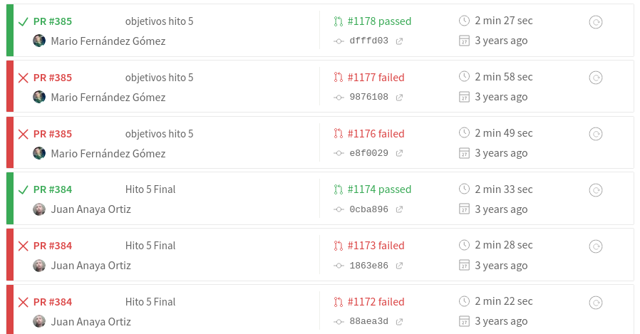

I use git at my job, but didn't think I
had to use it here
You really don't need getter
and setter for every attribute?
My program does not need business logic
because I don't intend to charge for
it
So a minimal viable product does not
need to include every single class I need now or in the
future, with every single attribute I could think of and
then some?
So, the code has to address the user
story...
University is caught in the waterfall
The
university works like a waterfall
People don't really want to program
They want to create stuff
(Agile) Software Engineering is about solving problems
We need a change of paradigm in teaching
software engineering
1. The toolchain is the new programming language
2. The full stack is the new architecture.
3. Deployment is the new running a command.
Or "upload this zip via FTP"
4. Team programming is tne new solo programming.
And Slack is the new mailman
Understanding and reviewing other people's code
is the new..
I guess QA phase, but who
knows
5. Best practices are the new This can be done, but shouldn't
#!/usr/bin/env perl
# This program does zilch
6. StackOverflow is the new RTFM
7. Testing is the new debugging
But the old debugging is the new debugging too
8. The browser is the new operating system
And JavaScript the new bash
Fortunately, JS is a language
... or many...
9. Loving the error messages is the new hating the error messages
10. Unicode is the new ASCII,
immutable data structures are the new constants
and multi-paradigm programming is the new procedural programming
my $repo = Git->repository ( Directory => '.' );
my $diff = $repo->command('diff','HEAD^1','HEAD');
my $diff_regex = qr/a\/proyectos\/hito-(\d)\.md/;
my $github;
SKIP: {
my ($this_hito) = ($diff =~ $diff_regex);
skip "No hay envío de proyecto", 5 unless defined $this_hito; my @files = split(/diff --git/,$diff);
my ($diff_hito) = grep( /$diff_regex/, @files);
say "Tratando diff\n\t$diff_hito";
my @lines = split("\n",$diff_hito);
my @adds = grep(/^\+[^+]/,@lines);
is( $#adds, 0, "Añade sólo una línea");
my $url_repo;
if ( $adds[0] =~ /\(http/ ) {
($url_repo) = ($adds[0] =~ /\((http\S+)\)/);
} else {
($url_repo) = ($adds[0] =~ /^\+.+(http\S+)/s);
}
Test until it works

Big switch: learn while you submit
Learning (objects) as code
my $prefix = $url_PaaS."/".$recurso->{'nombre'};
my $jsoner = new JSON::XS;
if ( $metodo eq 'PUT' ) {
ok( $recurso->{'IDs'}, "Se incluyen las IDs de los recursos enviados o devueltos" );
for my $id ( @{$recurso->{'IDs'}} ) {
my $URI = "$prefix/$id";
$response = $ua->put( $URI => json => $payload );
is( $response->res->code, 201, "Respuesta a la petición $metodo sobre $URI es correcta");
my $location = $response->res->headers->location;
if ( ok( $location, "«location» $location devuelto" ) ) {
my $get_URI = ( $location =~ /http/ )? $location : $url_PaaS.$location;
is( $ua->get($get_URI)->res->code, 200, "Se puede bajar el creado $id" );
}
}
} else { #... }
const milestones = await github.issues.listMilestonesForRepo( { owner: user, repo: repo } )
if ( ! milestones.data.length ) {
core.setFailed("❌ There should be at least one milestone")
}
const minMilestones = +core.getInput('minMilestones')
if ( minMilestones && milestones.data.length < minMilestones ) {
core.setFailed( "❌ There should be more than " + minMilestones + " milestone(s)");
}
var totalIssues = 0
var totalClosedIssues = 0
milestones.data.forEach( async function( milestone ) {
totalIssues += milestone.open_issues + milestone.closed_issues
totalClosedIssues += milestone.closed_issues
})
console.log( "✅ There are " + totalIssues + "
issues in your milestones and " + totalClosedIssues + "
closed issues ")